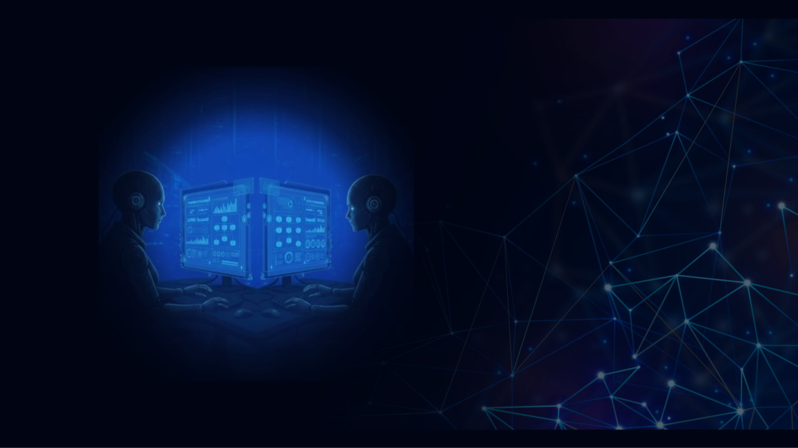

Alta Performance
O Treinamento Especializado foi criado para transformar gestores e equipes comerciais em profissionais de alto desempenho, prontos para alcançar novos resultados.

O Treinamento Especializado foi criado para transformar gestores e equipes comerciais em profissionais de alto desempenho, prontos para alcançar novos resultados.
Nada de teoria solta: o conteúdo é mão na massa, com foco no uso real das ferramentas e metodologias aplicadas no dia a dia de vendas e gestão.
Cada módulo é desenvolvido para gerar domínio técnico, confiança e resultados consistentes, impulsionando o crescimento de toda a operação comercial.
Formação completa e detalhada para compreender a fundo e aplicar com eficiência estratégias modernas de captação e atendimento ao público.
Conteúdo totalmente voltado para aplicação imediata, com foco nas rotinas reais do polo e na obtenção de resultados práticos e tangíveis.
Técnicas modernas e aplicadas para otimizar processos, eliminar gargalos operacionais e elevar o desempenho comercial.
Exercícios práticos que preparam a equipe para lidar com situações reais do dia a dia com segurança e assertividade.
Estrutura organizada e uso inteligente das ferramentas certas, transformando a rotina do polo em uma operação leve e previsível.
O Treinamento Especializado garante equipes confiantes, processos otimizados e comunicação mais ágil — reduzindo o esforço manual e ampliando resultados de captação.
Quero treinar minha equipe